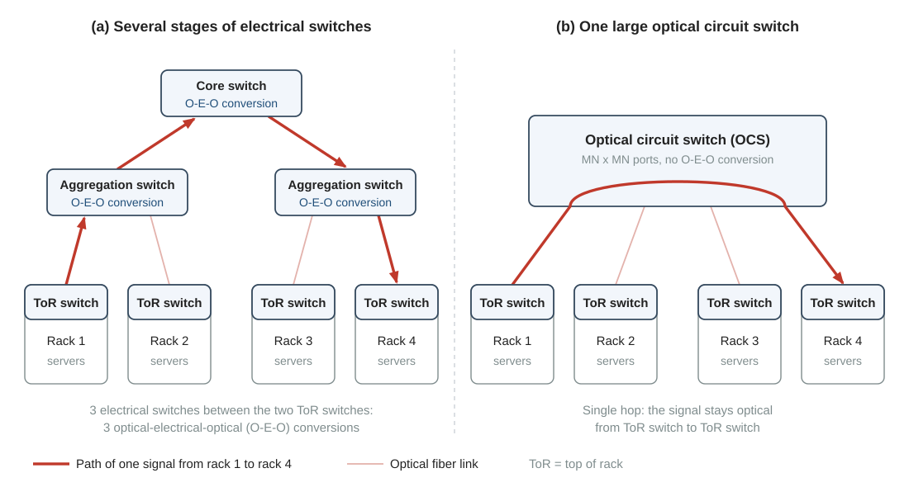
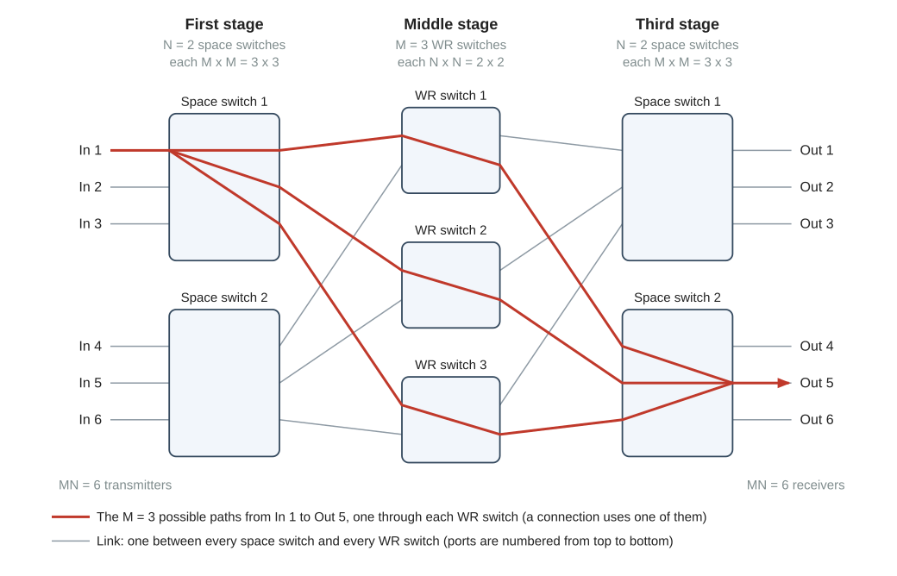
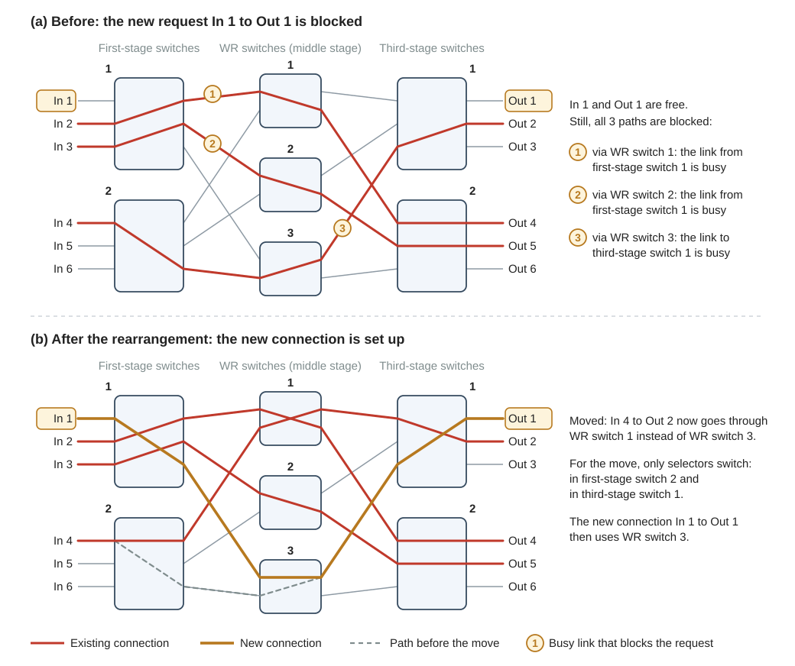

Background
11Datacenter networks, optical circuit switches and Clos networks
The switch of this research has thousands of ports. This page explains what such a switch does in a datacenter, why two stages of smaller switches cannot reach this size, and how a three-stage Clos network can. It also explains the word rearrangement, because the need for rearrangement limits the devices that each stage may use.
1. Why you need this
The planned paper proposes a large optical circuit switch with three stages. To judge any design of such a switch, you first need three answers: what the switch is for, how its size is counted, and why it has three stages. This page gives them.
The size is the port count \(MN\). It is the product of two numbers that section 3 explains: the number \(N\) of wavelengths that the switch uses (N in the scripts) and the size \(M\) of its space switches (sw_size or dcs_input_port_num in the scripts). The three stages also set a rule for your own design. An existing connection sometimes has to move to another path, and this move must not change its wavelength (section 5).
Port count = \(M \times N\). The available wavelengths fix \(N\) at about 100, so a larger switch needs a larger \(M\). A three-stage Clos network makes \(M\) large without a large loss before the optical amplifier.
The facts on this page come from two papers of the laboratory and from one reference that the first paper cites. The page calls them the JLT paper, the JOCN paper and Clos (1953).
- Mitsuya et al., "Three-Stage Optical Circuit Switch Architectures for Intra-Datacenter Networking," J. Lightw. Technol., vol. 43, no. 2, pp. 400-407, 2025 (doi 10.1109/JLT.2024.3465208)
- Nagai et al., "Design and Verification of Large-Scale Optical Circuit Switch Using ULCF AWGs for Datacenter Application," J. Opt. Commun. Netw., 2018
- C. Clos, "A study of non-blocking switching networks," Bell System Tech. J., vol. 32, no. 2, pp. 406-424, Mar. 1953
2. Datacenter networks and the optical circuit switch
A datacenter holds a very large number of servers. The servers are mounted in racks. Each rack has a top-of-rack (ToR) switch, which connects the servers of the rack to the rest of the datacenter. Typical datacenters connect the ToR switches through several stages of electrical switches, for example aggregation switches and core switches (JOCN paper).
The links between these switches are optical fibers. Each electrical switch therefore converts the arriving light into an electrical signal, switches it, and converts it back into light. This is an optical-electrical-optical (O-E-O) conversion. A signal that crosses three electrical switches is converted three times (Fig. 1(a)).
Both papers name the power that these conversions consume as a main problem of this architecture, and the traffic keeps growing. According to the JLT paper, the traffic inside datacenters is more than 70% of all datacenter-related traffic and grows by more than 20% per year.
An optical circuit switch (OCS) connects each input fiber to one output fiber and passes the light without converting it. The connection stays as it is until the switch is set differently. This fixed path is the "circuit". The JLT paper quotes two numbers for the benefit:
- In Google's Jupiter datacenter, optical switches were introduced in only one layer of the network, and the power consumption of the datacenter network fell by 41%.
- In a network in which optical switches process 90% of the data flows, the power consumption is 70% lower than in a system of electrical switches with the same throughput.
The second number belongs to a hybrid network. In such a network, electrical switches still process the small data flows, and optical circuit switches carry the large ones (JOCN paper).
If one OCS has enough ports for all racks, any two racks are connected in a single hop: the signal passes only one switch (Fig. 1(b)). According to the JLT paper, a switch with a high port count and a high throughput (both terms are defined below) removes the multi-stage architecture and so simplifies the fiber interconnection and the traffic control. This is why the research aims at a large switch.

Port count and throughput
Two numbers describe the size of an OCS.
- Port count: the number of input ports, which equals the number of output ports. An \(MN \times MN\) switch connects \(MN\) transmitters to \(MN\) receivers. In the datacenter of Fig. 1(b), these transmitters and receivers belong to the ToR switches.
- Throughput: the port count multiplied by the bit rate of one port. Example from the JLT paper: 12288 × 200 Gbit/s = 2457.6 Tbit/s.
The JLT paper names a third key parameter, the switching speed. It appears in section 5.
In the code. The two step scripts, step21_two_stage_one_point and step22_three_stage_one_point, print the port count as the product of the space-switch size and N. With its default parameters, the second script prints this line:
Switch size : 6144 x 6144 ports (M*N = 64*96)No given script calculates the throughput. It is one of the quantities that you will compare in matlab/work/work3_comparison.m.
3. Two building blocks and their limits
The switches of this research are built from two kinds of smaller switches. The JLT paper calls them sub-switches. Table 1 compares them. The text below the table explains its terms, and two later pages treat the sub-switches in detail.
| Space switch | Wavelength-routing (WR) switch | |
|---|---|---|
| Size | \(M \times M\) | \(N \times N\) |
| What selects the output port | the setting of the switch | the wavelength of the signal |
| Made of | selectors and couplers | aggregation coupler, optical amplifier (EDFA), arrayed-waveguide grating (AWG) |
| What limits the size | loss | the number of wavelengths |
| Details | page 16 | page 17 |
Space switch
A space switch of size \(M \times M\) connects each of its \(M\) input ports to any of its \(M\) output ports. It treats every wavelength in the same way. It is built from two elements. Their losses are given in decibels (dB): 3 dB is a factor of 2 in power, and 10 dB is a factor of 10 (page 12).
- A selector (\(1 \times M\)) is a switch that connects its one input to one of its \(M\) outputs. Its loss is small: 0.5 dB each time \(M\) doubles.
- A coupler (\(M \times 1\)) adds the light of its \(M\) inputs into one output. It needs no control, but its loss is large: 3.5 dB each time \(M\) doubles.
The space switch of the two-stage switch has a selector at every input and a coupler at every output. It is called a delivery-and-coupling (DC) switch.
Wavelength-routing switch
Every transmitter of the switch has a tunable laser. It can send on any of \(N\) laser frequencies on a fixed grid. Each of these frequencies is one wavelength channel.
A wavelength-routing (WR) switch of size \(N \times N\) consists of three parts. An \(N \times 1\) coupler, the aggregation coupler, collects the \(N\) input signals into one fiber. An erbium-doped fiber amplifier (EDFA), which is an optical amplifier (page 15), restores the power. A \(1 \times N\) AWG separates the wavelength channels: each of its output ports passes one channel. A transmitter therefore selects the output port of the WR switch by selecting its wavelength.
Two stages: the port counts multiply
The two-stage switch places \(N\) DC switches (\(M \times M\)) in front of \(M\) WR switches (\(N \times N\)). Output \(k\) of every DC switch is connected to WR switch \(k\). A transmitter reaches the receiver at WR switch \(k\), output \(j\), in two steps: its DC switch selects output \(k\), and its laser is tuned to wavelength channel \(j\). Page 21 treats this switch with the AWG of the JOCN paper.
There are \(M\) WR switches with \(N\) outputs each. The switch therefore has \(MN\) ports, although each sub-switch still has the size \(M\) or \(N\).
The coupler at an output of a DC switch can carry several signals at the same time, as long as their wavelengths differ. Signals that go to the same WR switch always differ in wavelength, because they go to different receivers. A new connection between a free transmitter and a free receiver can therefore always be set up, whatever connections already exist. A switch with this property is called strictly non-blocking, and both papers state it for the two-stage switch.
Why two stages stop scaling
To get more ports, \(N\) or \(M\) must grow. Both have a limit.
- \(N\) is limited by the bandwidth of the lasers and the amplifiers: typically about 100 wavelengths on the 50-GHz grid in the C band (JLT paper). The C band is the wavelength range that the EDFA amplifies, and on the 50-GHz grid neighboring channels are 50 GHz apart (page 17). This project uses \(N = 96\).
- \(M\) is limited by loss. Each time \(M\) doubles, the DC switch loses 4 dB more (0.5 dB in the selector and 3.5 dB in the coupler), and this loss lies before the EDFA.
The JLT paper gives the loss that a signal of the two-stage switch has collected when it reaches the EDFA:
The brackets \(\lceil\ \rceil\) mean rounding up to the next integer. For \(N = 96\) the second term is 3.5 × 7 = 24.5 dB, because \(\log_2 96 = 6.58\) is rounded up to 7. With \(M = 8\) the total is 12 + 24.5 = 36.5 dB, and with \(M = 64\) it is 24 + 24.5 = 48.5 dB. A loss of 48.5 dB leaves only about 1/70000 of the power. The signal power is lowest at the input of the EDFA, and page 15 shows that the power at this point decides the signal quality. This loss therefore cannot grow without limit.
The JLT paper reports how this limit appears for a 200-Gbit/s signal and \(N = 96\). With a transmitter power of 0 dBm (that is 1 mW), the two-stage switch reaches 384 ports. The paper allows a transmitter power of at most 5 dBm. Up to this power, no two-stage switch with more than 1000 ports is possible, and the paper names the loss before the EDFA as the reason.
In the code. The two terms of Eq. (1) are the library functions DCS_loss and coupler_loss (page 12). Each takes the number of ports and returns the loss in dB. After setup_path you can type this in the Command Window:
DCS_loss(64) + coupler_loss(96) % 24 + 24.5 = 48.5 dBIn step21_two_stage_one_point the two terms are the variables dcs_loss and agg_coupler_loss. With its default parameters that script uses the AWG of the JOCN paper, so its aggregation coupler has fewer than \(N\) inputs. With ULCF_flag = 0 the coupler has \(N\) inputs, as in Eq. (1); the note in section 1 of the script tells you to set ULCF_deg = 1 together with it.
4. The Clos network
The lossy part of the DC switch is its coupler. The three-stage switch of the JLT paper therefore uses a space switch with selectors on both sides: \(1 \times M\) selectors at its inputs and \(M \times 1\) selectors at its outputs. Each time \(M\) doubles, such a switch loses only 2 × 0.5 = 1 dB more.
This has a price. A coupler output can carry several signals at once, but a selector output carries only one. With selectors at its outputs, a space switch can send only one signal to each WR switch. If the two-stage switch used such space switches, two transmitters at the same space switch could not reach two receivers at the same WR switch at the same time. Each receiver must therefore be able to take its signal from any WR switch. A third stage of space switches behind the WR switches makes this possible. The result is a network that C. Clos described in 1953.
Three stages and two conditions
A three-stage Clos network has \(r\) first-stage switches with \(n\) inputs each, \(m\) middle-stage switches, and \(r\) third-stage switches with \(n\) outputs each. Every first-stage switch has exactly one link to every middle-stage switch. Every middle-stage switch has exactly one link to every third-stage switch. Each link carries one signal.
A connection from an input to an output therefore has exactly \(m\) possible paths: one through each middle-stage switch. To set up a connection means to choose its middle-stage switch.
A request is a new connection between a free input and a free output. A request is blocked if each of its \(m\) paths contains a link that is already in use. Two properties of a network are distinguished.
- Strictly non-blocking: no request is ever blocked, whatever connections already exist.
- Rearrangeably non-blocking: a request can be blocked, but it can always be set up after some existing connections have been moved to other middle-stage switches.
The number of middle-stage switches decides which property the network has. The JLT paper uses the following two conditions and cites Clos (1953) for the network:
You can understand the first condition by counting. The first-stage switch of the request has \(n-1\) other inputs. In the worst case they use \(n-1\) different middle-stage switches. The third-stage switch of the request has \(n-1\) other outputs, and they can use \(n-1\) further middle-stage switches. So up to \(2n-2\) middle-stage switches can be closed to the request. With \(2n-1\) of them, one always remains.
The second condition is the smallest possible number: the \(n\) inputs of one first-stage switch need \(n\) different middle-stage switches. With \(m = n\) every set of connections can still be set up, but only if existing connections may be moved.
The Clos network of this project
The JLT paper uses space switches in the first and third stages and WR switches in the middle stage. It calls this arrangement Scheme A. This is the conventional three-stage switch of this project (page 22). Table 2 maps the letters of the Clos network to the letters of this project.
| Clos network | This project | In the scripts |
|---|---|---|
| \(r\) first-stage switches, \(n\) inputs each | \(N\) space switches, each \(M \times M\) | N, sw_size |
| \(m\) middle-stage switches | \(M\) WR switches, each \(N \times N\) | sw_size, N |
| \(r\) third-stage switches, \(n\) outputs each | \(N\) space switches, each \(M \times M\) | N, sw_size |
| \(nr\) inputs and \(nr\) outputs | port count \(MN\) | sw_size*N |
The wiring follows the Clos rule. First-stage switch \(i\) sends its output \(k\) to WR switch \(k\), where it arrives at input \(i\). Every WR switch sends its output \(j\) to third-stage switch \(j\). Figure 2 shows this for a small example.

In this network \(n = m = M\). By Eq. (2) it is rearrangeably non-blocking, with the smallest possible number of middle-stage switches. The JLT paper chooses this number to minimize the hardware cost. A strictly non-blocking network would need \(2M-1\) WR switches. For \(M = 64\) these are 127 WR switches, each with its own EDFA, instead of 64. Every space switch would also need \(2M-1\) ports on the side that faces the WR switches.
The JLT paper writes \(R\) for the number of middle-stage switches. It states that the network is rearrangeably non-blocking if \(M \le R \le 2M-2\), and it sets \(R = M\). For the strictly non-blocking case the sentence in the paper reads \(M \ge 2N-1\). Written for \(R\) middle-stage switches and \(M\) inputs per first-stage switch, the first condition of Eq. (2) is \(R \ge 2M-1\).
What three stages gain and what they cost
With selectors on both sides of the first-stage switch, the loss before the EDFA becomes
For \(M = 64\) and \(N = 96\) this is 6 + 24.5 = 30.5 dB. Equation (1) gave 48.5 dB for the same size: the three-stage switch has 18 dB less loss before the EDFA, a factor of about 63 in power.
The JLT paper builds the third-stage switch in two versions. In Scheme A1 it has selectors on both sides, like the first-stage switch. In Scheme A2 its outputs have \(M \times 1\) couplers in place of the selectors. This needs fewer elements, but it adds loss (page 22). In the simulation of the JLT paper (200-Gbit/s signal, transmitter power 0 dBm), Scheme A1 reaches 12288 ports. The two-stage switch reaches 384.
The three stages have two costs.
- More hardware. A third stage of space switches is added behind the EDFA, where loss does less harm (page 15). A selector is built from \(1 \times 2\) elements (page 16). Per port, the JLT paper counts \(4(M-1)\) of them for Scheme A1, \(3(M-1)\) for Scheme A2 and \(M-1\) for the two-stage switch.
- A weaker property. The network is rearrangeably non-blocking, not strictly non-blocking as the two-stage switch is. Section 5 shows what this means in practice.
In the code. These four lines of step22_three_stage_one_point (two from its section 1, two from its section 3) contain the size of the network and the two terms of Eq. (3). The function selector_loss takes the number of ports of a selector and returns its loss in dB.
sw_size = 64; % size M of the M x M space switches (64*96 = 6144 ports)
N = 96; % number of wavelength channels, on the 50-GHz grid (paper)
sw1_loss = 2*selector_loss(sw_size); % the target passes two selectors [dB]
agg_coupler_loss = coupler_loss(N);The script main_three_stage_conventional runs the same chain for list_sw_size = [16 32 64 128], that is, for 1536, 3072, 6144 and 12288 ports.
Equation (1) has two terms. The three-stage Clos network reduces the first term: selectors replace the couplers before the EDFA. The AWG of the JOCN paper has several input ports and reduces the second term: several small aggregation couplers replace the large one (page 17). Your research combines the two.
5. What rearrangement means
Figure 3(a) shows the network of Fig. 2 with three existing connections. A request arrives: In 1 to Out 1. Both ports are free. The request has three possible paths, one through each WR switch, and each path is blocked.
- WR switch 1: the link from first-stage switch 1 to WR switch 1 already carries the connection In 2 → Out 4.
- WR switch 2: the link from first-stage switch 1 to WR switch 2 already carries In 3 → Out 5.
- WR switch 3: the link from WR switch 3 to third-stage switch 1 already carries In 4 → Out 2.
The network is rearrangeably non-blocking, so the request can still be set up. In Fig. 3(b) the connection In 4 → Out 2 has moved from WR switch 3 to WR switch 1. The two links that it needs there were free. WR switch 3 is now empty, and the new connection uses it. To move an existing connection to another middle-stage switch in order to admit a new one is called rearrangement.

Which devices switch during a rearrangement
The moved connection keeps its input port and its output port. Only its path changes. Which devices must act for this depends on what the three stages are made of. Each stage can be a set of space switches or a set of WR switches, and the JLT paper examines all eight combinations (Schemes A to H). Table 3 shows two of them.
| Scheme | Sub-switches (first / middle / third stage) | First stage | Middle stage | Third stage |
|---|---|---|---|---|
| A | space / WR / space | selector | nothing | selector |
| B | WR / space / space | tunable laser | selector | selector |
A WR switch has nothing to switch: a signal leaves it at another output port only if the transmitter changes its wavelength. This is why Table 3 lists the tunable laser for the first stage of Scheme B. The difference between a selector and a tunable laser is speed. The JLT paper gives these numbers:
- a selector switches in less than 10 µs;
- a tunable laser needs more than 100 µs to change its wavelength;
- switching times on the order of 100 µs are desirable for optical switches in datacenters;
- when a request is blocked, up to \(N-1\) existing connections must be moved.
The paper therefore continues with the schemes in which a rearrangement needs selectors only. These are Scheme A, Scheme C (space / space / WR) and Scheme G (three stages of space switches). It then compares the transmitter power and the hardware that these schemes need (Table V of the paper). For each of the four port counts that it examines, the scheme that it finds reasonable is a version of Scheme A: Scheme A2 for 1536 and 3072 ports, Scheme A1 for 6144 and 12288 ports. This is why Scheme A is the baseline of this project.
Why Scheme A never changes a wavelength
In Scheme A the output port of the AWG fixes the wavelength, and output \(j\) of every WR switch is wired to third-stage switch \(j\). The wavelength of a connection is therefore fixed by its third-stage switch alone. It is the same through every WR switch.
When the connection In 4 → Out 2 moves in Fig. 3, selectors in first-stage switch 2 and in third-stage switch 1 change their settings. The WR switches have nothing to switch, and the transmitter keeps its wavelength.
The proposed switch changes the middle stage. With an AWG that has several input ports, the wavelength also depends on the input port (page 17). Your design must keep the property of Scheme A: the wavelength of a connection must not depend on the middle-stage switch that it passes. Paragraph 6 of the introduction (page 01) states how the proposal does this. You will check it in your own work (page 23).
In the code. The given scripts do not set up or move connections. They calculate the signal quality of one connection on a fixed path, while all other inputs of its space switches carry signals. Rearrangement enters your work as a condition on the design, not as code. The header of matlab/work/work1_wavelength_rule.m lists it among the consistency conditions: the wavelength of a connection does not depend on the wavelength-routing switch that carries it.
6. Check your understanding
- A three-stage switch has
sw_size = 64andN = 96. What is its port count? What is its throughput if every port carries 200 Gbit/s?Answer
64 × 96 = 6144 ports. 6144 × 200 Gbit/s = 1228.8 Tbit/s. The JLT paper built and tested a part of a Scheme A2 switch of this size and states the same throughput.
- How many space switches and how many WR switches does the switch of question 1 contain? How many EDFAs does it have per port, if every WR switch has one EDFA?
Answer
96 first-stage space switches, 64 WR switches and 96 third-stage space switches. 64 / 6144 = 1/96 ≈ 0.0104 EDFAs per port. In general the number is \(1/N\), because \(N\) signals share one EDFA. The JLT paper rounds it to 0.01.
- Is the switch of question 1 strictly non-blocking? If it is not, how many WR switches would a strictly non-blocking switch need if every first-stage switch keeps its 64 inputs?
Answer
It is not. It has \(n = m = 64\), so it is rearrangeably non-blocking. A strictly non-blocking network needs m ≥ 2 × 64 - 1 = 127 WR switches.
- The two-stage switch and the three-stage switch both have \(M = 32\) and \(N = 96\). How much loss does a signal collect before the EDFA in each of them?
Answer
Two-stage switch, Eq. (1): 4 × 5 + 3.5 × 7 = 20 + 24.5 = 44.5 dB. Three-stage switch, Eq. (3): 2 × 0.5 × 5 + 3.5 × 7 = 5 + 24.5 = 29.5 dB. The difference is 15 dB, that is 3 dB for each of the five doublings of \(M\). In MATLAB:
DCS_loss(32) + coupler_loss(96)and2*selector_loss(32) + coupler_loss(96). - In Fig. 3(a) the request was unblocked by moving In 4 → Out 2. Find another existing connection whose move also unblocks the request.
Answer
Move In 2 → Out 4 from WR switch 1 to WR switch 3: the link from first-stage switch 1 to WR switch 3 and the link from WR switch 3 to third-stage switch 2 are both free. The request then uses WR switch 1. In the same way, In 3 → Out 5 can move from WR switch 2 to WR switch 3, and the request then uses WR switch 2.
- The switch is built as Scheme A. Which devices change their state when the connection In 4 → Out 2 moves as in Fig. 3? Which devices do not?
Answer
Selectors in first-stage switch 2 change (In 4 now leaves at output 1, not at output 3), and selectors in third-stage switch 1 change (Out 2 now takes its signal from input 1, not from input 3). The WR switches do not change. The laser of In 4 keeps its wavelength, because the wavelength is fixed by third-stage switch 1, and the connection still ends there.
The switch of this project is a Clos network of \(N\) first-stage space switches (\(M \times M\)), \(M\) WR switches (\(N \times N\)) and \(N\) third-stage space switches (\(M \times M\)); it has \(MN\) ports and is rearrangeably non-blocking. Because \(N\) is fixed near 100, the port count grows only with \(M\), and \(M\) is limited by loss and by crosstalk (light that leaks from other signals), which pages 12 to 17 teach you to calculate. Whatever you change in the middle stage, a rearrangement must still need selectors only and must never change a wavelength.